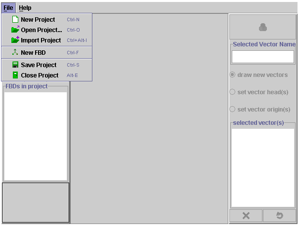

How to Use FreeBody Drawer and Editor
How to Open and Use a Project
This is easy. Just click on the projects tab and select the appropriate listed
project. In the sample shown below, you have 5 possible projects to choose from.
The left hand column gives the user editing control over the vectors that you
draw on the image which appears. After you have loaded a project, follow these
simple steps:
 |
- To draw a new vector make sure the "draw vectors" radio
button is selected.
- To name a vector type in the text box on the top, right hand side.
Press enter and the name will appear in the text area, lower right.
- To change the colour of the vector press the colour icon at the top
right and select desired colour.
- To change the length or direction of the vector select the set vector
head(s) button. A small circular hot-spot will appear and you can drag
the vector by placing the mouse over this point and dragging.
- To change the location of the vector choose the set vector origin(s)
button and repeat the above.
- To delete a vector select it with either of the last two buttons and
then press the "X" button. Rreset removes ALL vectors.
- After you have drawn your FBD press the done button. The FBD icon
will now become active and you can press this to see the instructor
drawn FBD.
- The button labeled FBD's will expose a visual menu of the FBD's in
your project. You can load any one of these scenarios by clicking on
them.
|
How to Make a Project - Using FreeBody Editor
Getting Started
The editor uses the same interface that is used in FreeBodyDrawer. The only
difference is contained in the controls which appear under theFile menu selection.
The following figure illustrates the editor side menu:
|  |
Use new project to start a brand new project file (see the note following
this on file stucture)
Open project allows you to open an existing project file and import project
allows you to combine existing projects.
|
Project Files and the Underlying File Stucture
 |
It is essential that all FBD files be contained in a common folder (called
projects in this example). Each project is a combination of a project
file (created by the editor when you save the project) and an image file.
It is important that the image file have a specific name of the format:
|
 |
Notice, for example that project_1 is accompanied
by the folder project_1_images. You can assign any valid name you wish to
the project file but you must also store all images for that project in
an appropriately named folder. |
| |
|
The HTML Parameters that call Your Projects
The HTML file which calls FreeBodyDrawer contains a parameter setting that
names the projects that you wish to load. This may seem cumbersome but it allows
the user to set up different instances of the applet that call only the projects
you wish. A sample code snippet is shown below:
<PARAM NAME = "projects" VALUE ="project_1,project_2">
In this example only the projects named project_1 and project_2 would be loaded
by the applet FreeBodyDrawer. Note carefully how you change the HTML file. Every
instance of the project parameter must be changed to reflect the projects you
wish to load. Since this applet uses the Sun plugin, there are 4 different locations
in the file that need to be changed. It is recommended that you make a back
up of the file before editing it and inspec the file carefully before hand so
that you see where the project params are called.